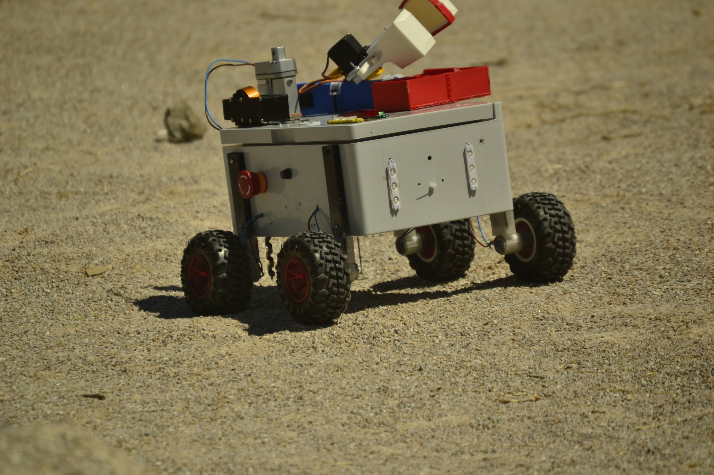
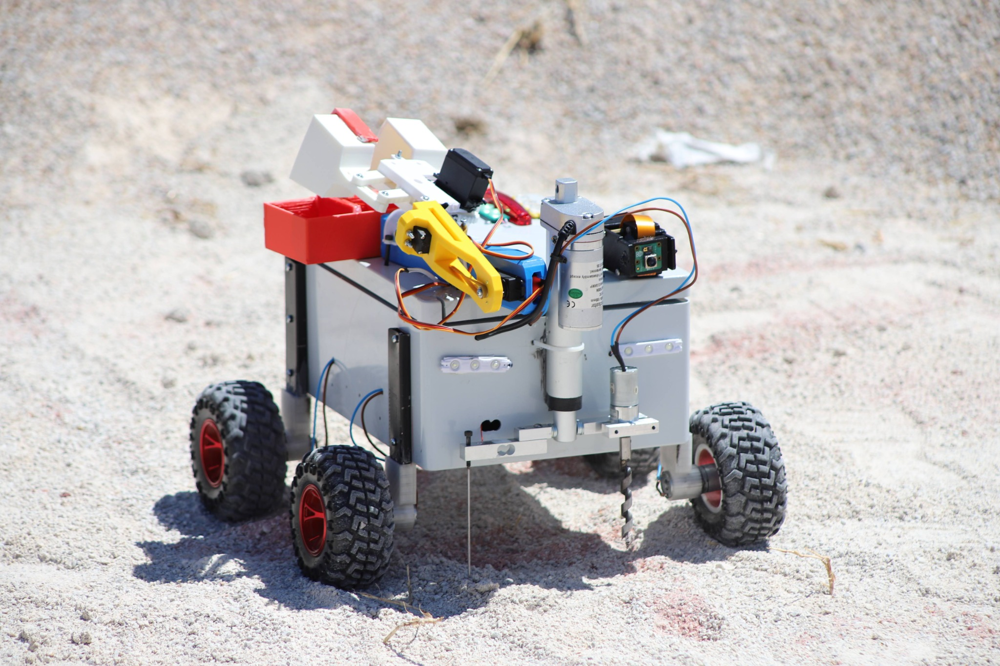
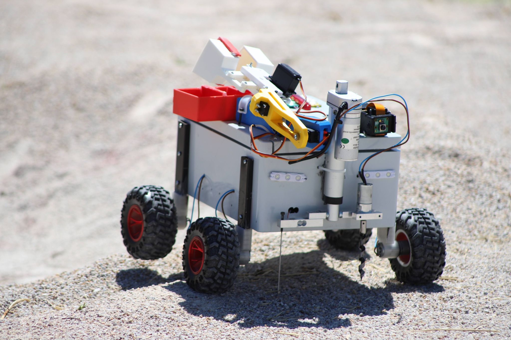
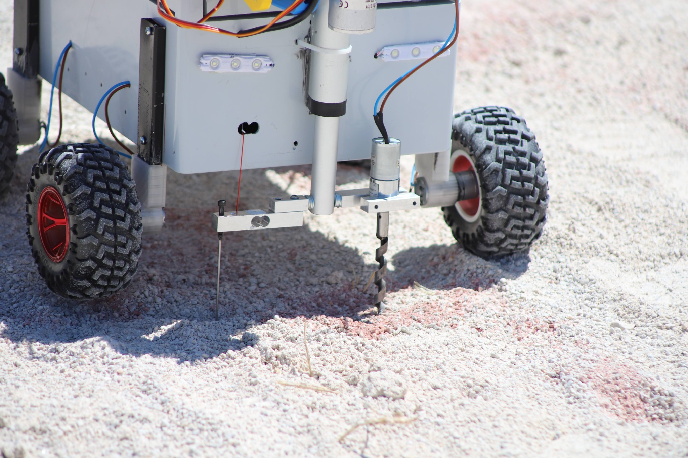
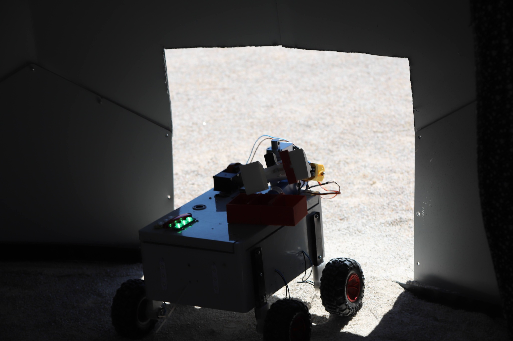
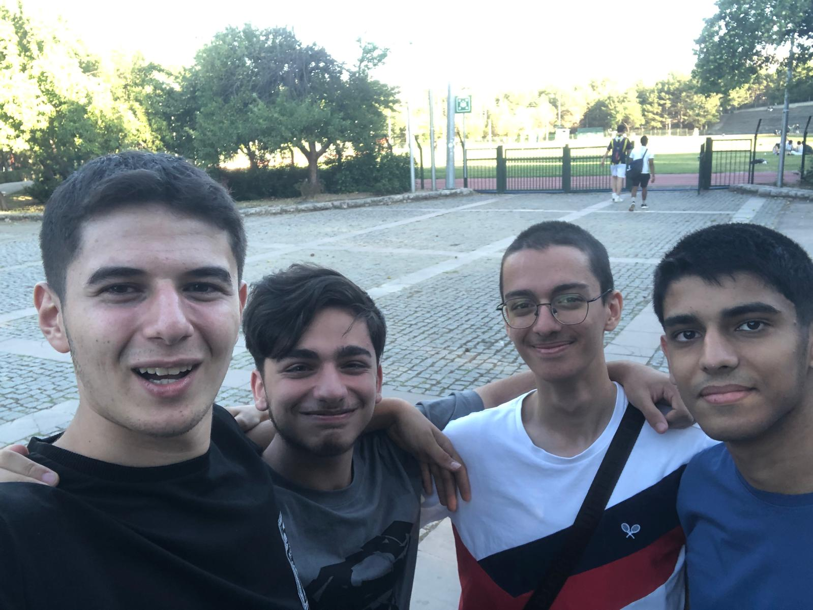
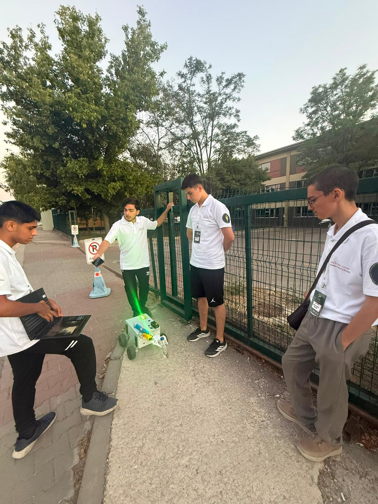
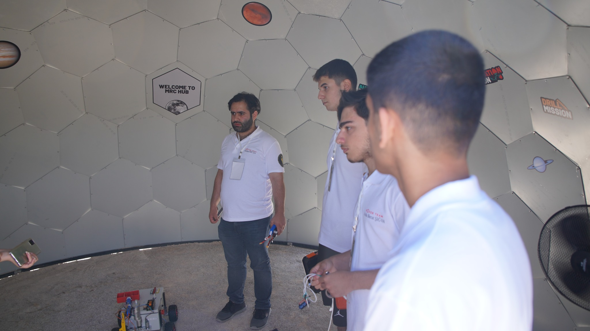
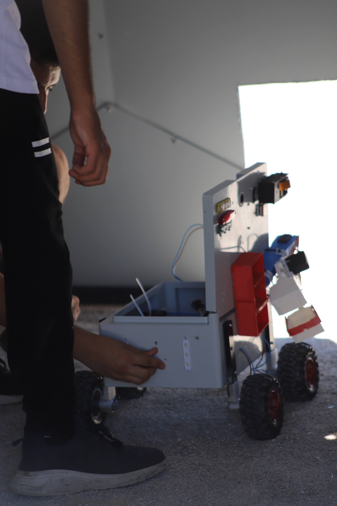

15/05/2026
Kuruluşumuz
Okulumuzun Rover Takımı olarak resmen kurulduk.

ANKARA
ŞÖNKAL Rover Team Web Sayfasına Hoş Geldiniz...
Başlangıçtan bugüne
15/05/2026
Okulumuzun Rover Takımı olarak resmen kurulduk.
02/06/2026
Aracımızın ilk hâline ait sürüş videoları ve fotoğraflarıyla MRC 2026 başvurumuzu yaptık.
01/07/2026
Yarışma finalistleri arasında seçildik.
01/08/2026
Ödül töreninde sertifika kazanmaya hak kazandık.
Adım adım ilerleme
1 Temmuz tarihinde yarışma finalisti açıklandık ve ODTÜ'de düzenlenen MRC 2026'ya katılma hakkı kazandık.
Aracımız sahip olduğu yetenekler ile yarışma sahasında birçok görevi başarıyla yerine getirdi.
Aracımız ile ödül töreninde sertifika almaya hak kazandık.
İlk üretimimiz
PROTOTİP · 01
Takımımız tarafından üretilmiş yarışma şartlarına uygun ilk prototip.




Birlikte üretiyoruz


Takım Kaptanı, Yazılım, Elektronik
TEKNOFEST Liseler Arası Efficiency Challenge Elektrikli Araç Yarışları, TEKNOFEST Liseler Arası İnsansız Hava Araçları Yarışması, GençBİZZ, MRC 2026, Deneyap, Deneyap Proje Şenlikleri, TÜBİTAK 4006-A, TÜBİTAK 2204-A, TÜBİTAK 2204-CMekanik
TEKNOFEST Liseler Arası Efficiency Challenge Elektrikli Araç Yarışları, TEKNOFEST Liseler Arası İnsansız Hava Araçları Yarışması, MRC 2026, TÜBİTAK 4006-A, TÜBİTAK 2204-ASosyal Medya, Doküman Yazma, İletişim
MRC 20263D Tasarım
MRC 2026
Bir sonraki ufuk

Misyonumuz, okulumuza "GERÇEK BİR PROJE TAKIMI" kazandırmak ve öğrencilerin gerçek tecrübeler kazanabilecekleri projelere katılabilmelerini sağlamaktır.
Vizyonumuz; takımımızı okulumuzda nesilden nesile aktarmak, takımımızın ve okulumuzun ulusal ve uluslararası alanda tanınırlığını artırmaktır.
Yanımızda olanlar